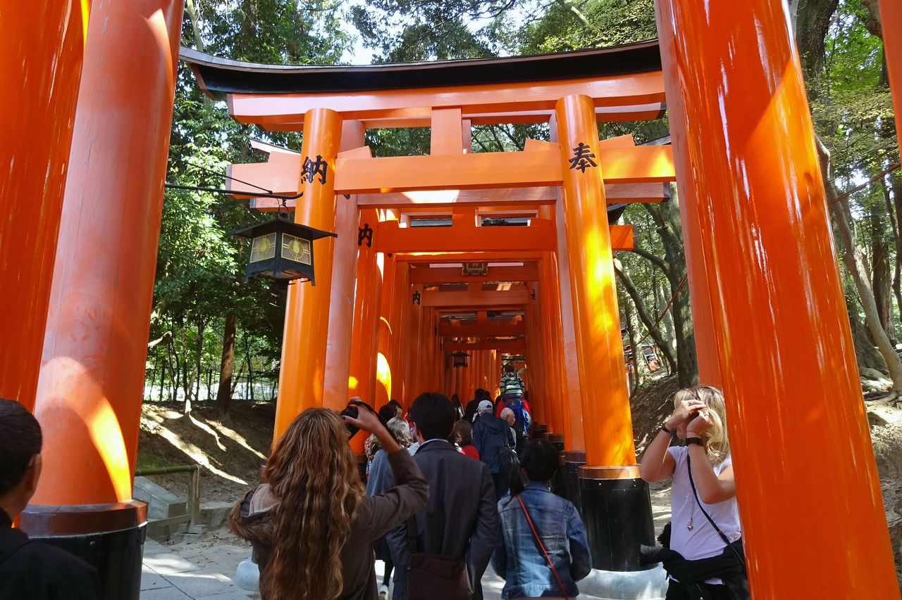

╰┈➤ Japan is located in East Asia and is made up of islands in the Pacific Ocean. It lies to the east of China, Korea, and Russia, separated by the Sea of Japan.
╰┈➤ It's an archipelago of thousands of islands and is very mountainous, with forests covering over 70% of the land.

╰┈➤ Mount Fuji is Japan's tallest peak, being 3,776 meters tall.
╰┈➤ It's considered an active volcano and had its last eruption in 1707.
╰┈➤ It is one of the most well known tourist attractions in Japan.

╰┈➤These red gates, also known as torii, are a symbol of entry into a sacred space, specifically a Shinto shrine.
╰┈➤These gates are an instantly recognizable symbol of Japan, making it a popular tourist attraction